This is a guide on Ciat Lonbarde DIY for beginners, with a focus on Peter's paper circuits and other diy friendly projects
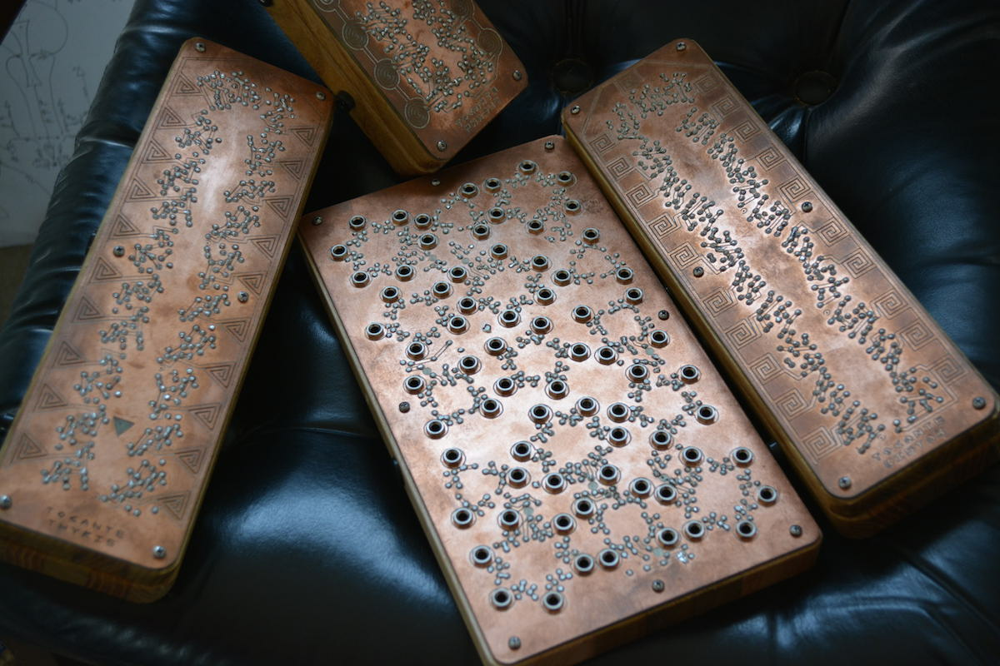
Resources:
Ciat Lonbarde
Paper Circuits
Lines Forum
Ciat Lonbarde Diy Fans Instagram (Great Inspo for Builds!)
Ciat-Lonbarde is a unique collection of analog synthesizers designed by Peter Blasser. These instruments are known for their distinctive wooden enclosures, DC or battery power, and unconventional, experimental design. They are crafted to produce unusual and innovative sounds, often incorporating elements of randomness and touch sensitivity.
The Ciat-Lonbarde Master Legend:
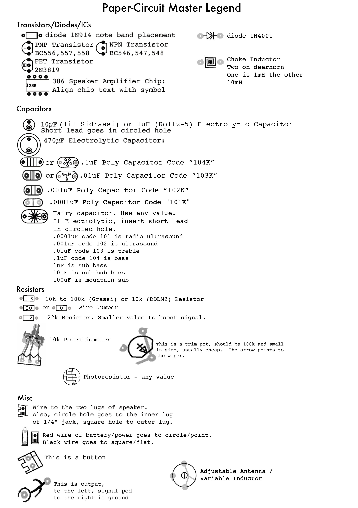
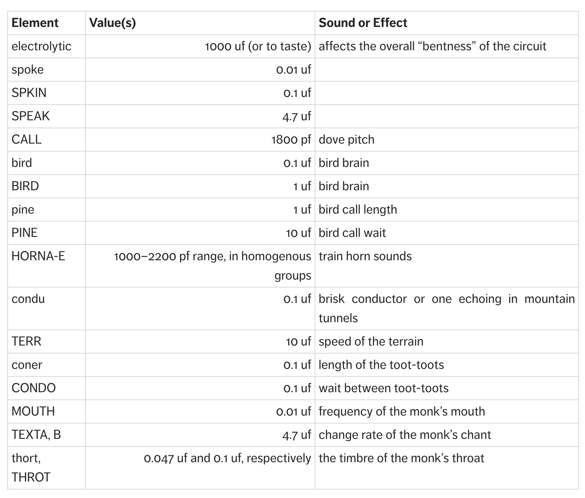
Peter's circuits are like antient foreign ruins, with many cryptic symbols and strange geometries influenced by the geography of his hometown and places he's traveled too. A lot of his circuits are influenced by sound in nature, touch and all the esotericism inbetween stories of personality and time travel. The master legend demystifies his paper ciruits, and allows you to put these puzzles together relatively easily.
So what is a paper circuit?


A paper circuit is a pdf or printable circuit that shows the (usually through-hole) components on one side, and the connecting traces on the other side. You fold the paper circuit in half and poke your holes where the components go with an awl or needle and place the components through the hole on one side, and fold the legs and solder the connections on the other side. Sometimes you may need additional wire to make your connections on the back, but usually if your components legs are long enouph you can make all your folds and solder with no additional wire.
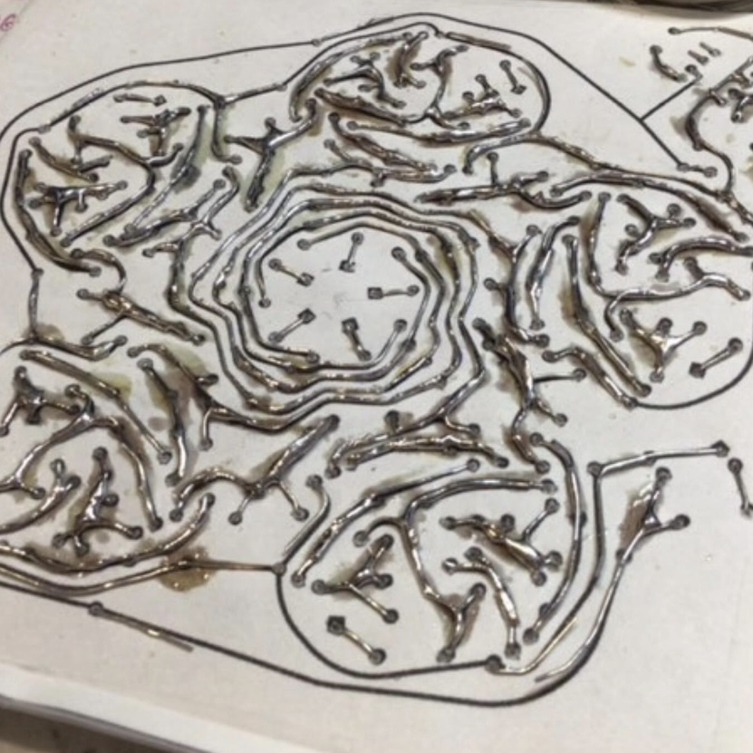
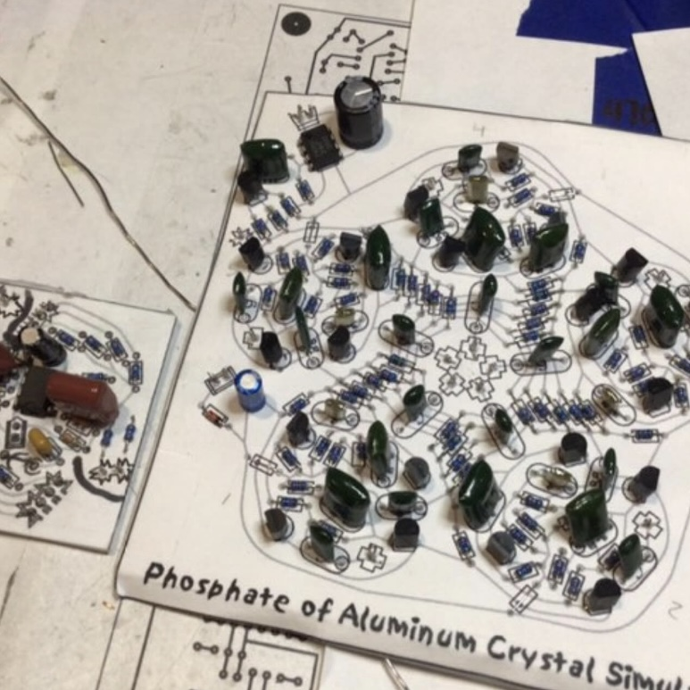
This is what the inside of a synth with some paper circuits and PCBs (Printed Circuit Boards) can look like. The only difference between paper circuits and PCBs is that pcbs have copper traces on the inside that make the connections between points on the board internally, and copper pads where you put the components through, so you only need to solder at the points where you place the components.
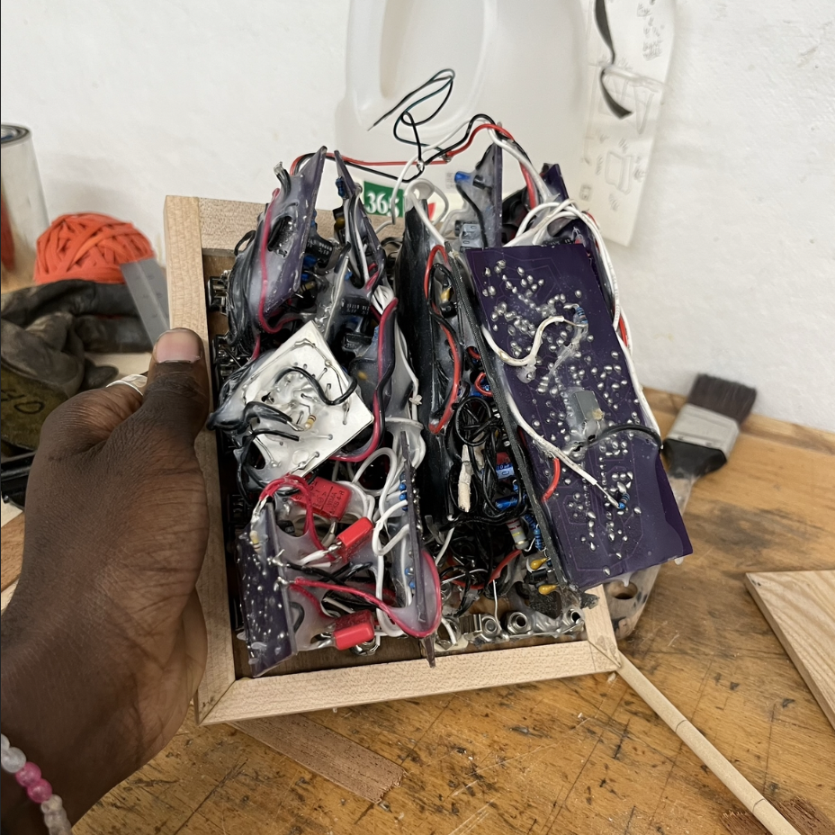

Enclosures:
Cigar Boxes!!
One with thumb tacs as patch pints for your hands, worms, coins, forks, knives and steel wool, and one with 4mm banana jacks


Rolz5 Mods:
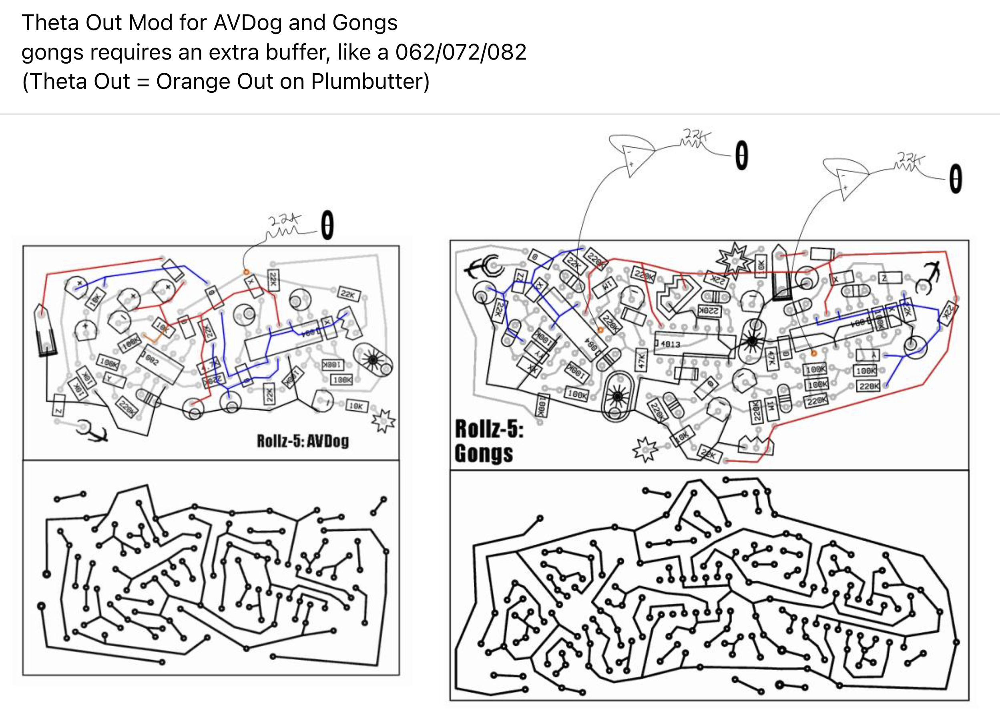
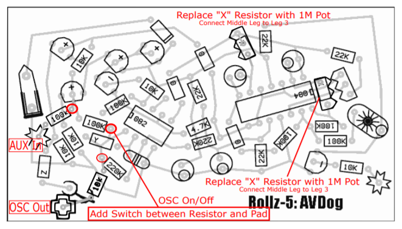
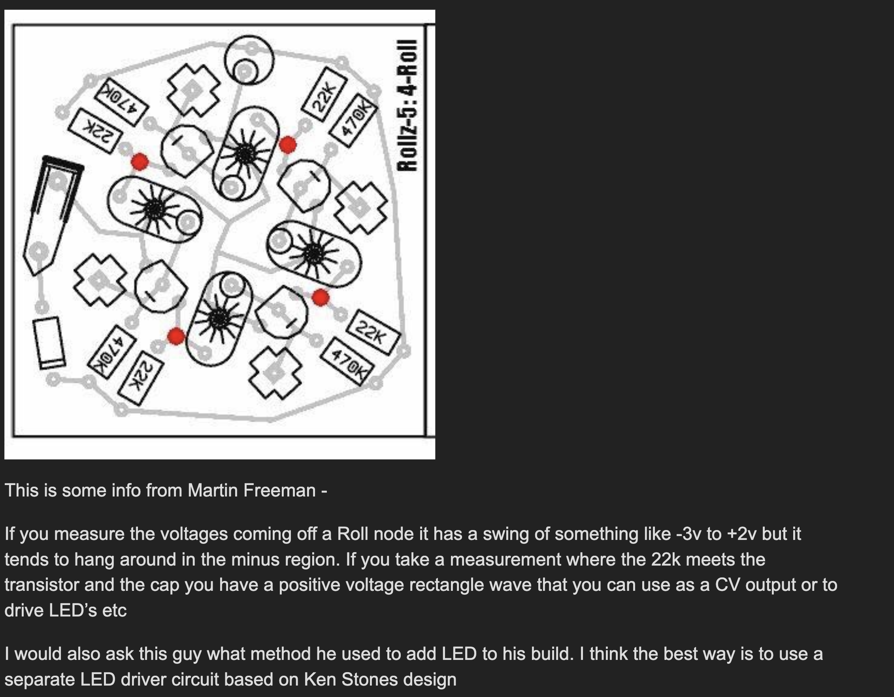
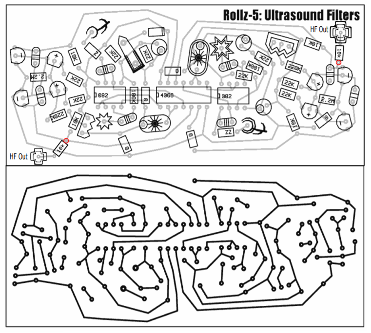
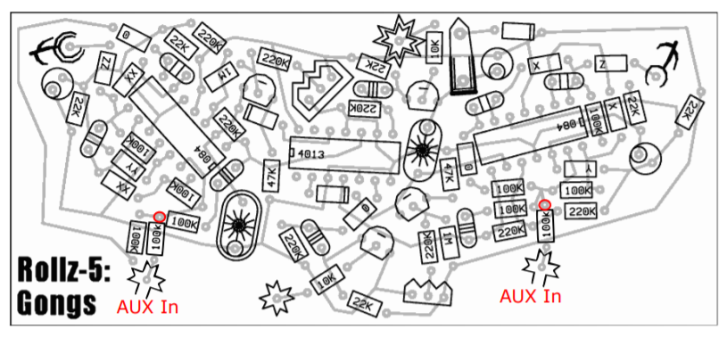
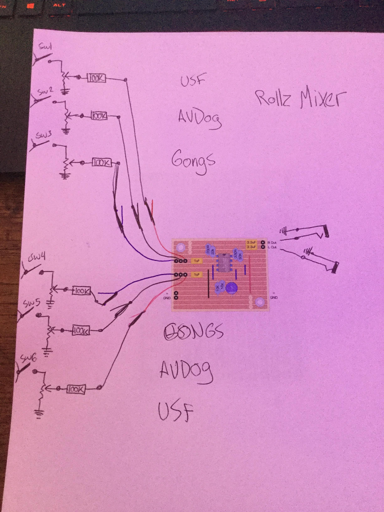